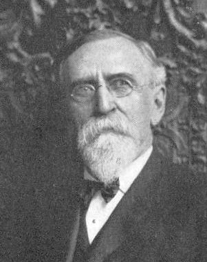

Leaders In Homoeopathic Therapeutics
by E. B. NASH
Presented by Médi-TIntroduction
 To My Colleagues, Young and Old:
I desire in this form to put on record things new and old in the practice of medicine, as I have found them, in a professional career of over thirty years.
In my younger days I found great pleasure and profit in reading the writings of Hering, Dunham, Wells, Lippe and others, who have row ceased from their labors and gone to their well-earned rest.
I have carefully tested their teachings, and now that my own hair begins to grow frosty, I desire to leave some testimonial to the truth of those teachings. My aim is not to write a complete Materia Medica, nor yet an exclusive work on practice, though it may partake of the character of both, but rather facts and observations in practice and principles, which I have abundant reasons for believing true and reliable.
While I may not hope always to instruct those of my professional brethren who are contemporaries and abreast with me in professional attainments and experience, I do hope not to tire, but rather to entertain them, at least, a part of the time; and still more do I hope to be a real help to the beginner, even as I myself was helped.
I do not propose to adopt the usual way by beginning with Aconite and ending with Zincum, but to follow the bent of my inclinations, or, as it is sometimes expressed, the movings of the spirit; and may I not here invoke the aid of the spirits of the immortal Hahnemann, Boenninghausen and the galaxy of bright names that adorn the fair page of the history of Homceopathy to help me.
Finally, I desire in every chapter to write something useful to somebody, and if in any part of this work I should give expression to anything wrong I here declare once for all my entire willingness to be forgiven.
E. B. NASH, M. D.
Cortland, N. Y.Author of
"Leaders in Typhoid",
"Regional Leaders",
"Leaders in Sulphur",
"How to Take the Case",
"Leaders in Respiratory Organs",
& "Testimony of the Clinic"* * * * *
To my wife,
My Loving and Faithful Co-Laborer,
Sympathizing with Me in Trial,
Rejoicing with Me in Success,
I Gratefully Dedicate
This Book.E.B. Nash
Copyright © Médi-T 2000